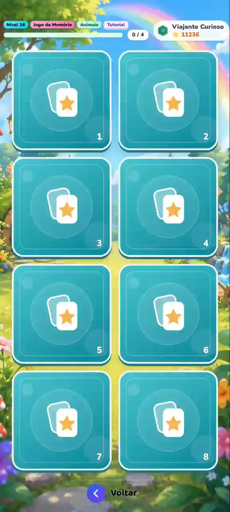
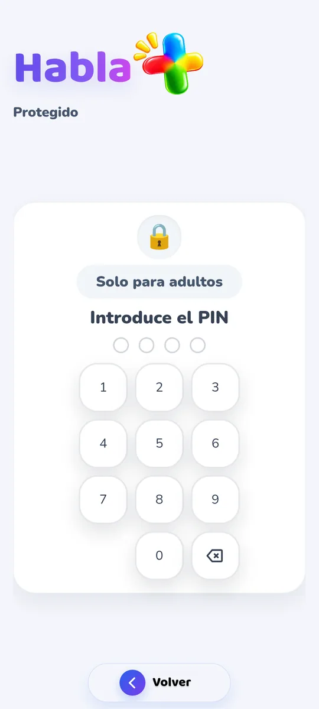

Pedir lo que se quiere
Señalar no siempre basta. Con imágenes y voz, el niño o la niña construye la frase y la oye en voz alta.
Android · ya en Google Play
Habla+ une imágenes, voz y más de 50 juegos para que cada niño y niña se comunique, aprenda palabras y juegue, a su ritmo. En casa, en la escuela y entre sesiones de logopedia.
Por qué existe Habla+
Comunicar es más que hablar. Una mirada, un gesto, una imagen: todo cuenta. Habla+ nació para dar más formas de decir y más ganas de intentarlo.
Señalar no siempre basta. Con imágenes y voz, el niño o la niña construye la frase y la oye en voz alta.
En lugar de vídeos sin fin, juegos cortos y sin anuncios, donde cada partida trae palabras nuevas.
Familia, escuela y logopedas con la misma herramienta, el mismo progreso y las mismas palabras.
Comunicar, jugar y explorar en una sola app, pensada para los niños y para quien los acompaña.
Conoce Habla+
Para pedir, compartir, explorar y aprender, con espacio para elegir lo que tiene sentido en cada momento.
Elegir lo que se quiere decir, construir una frase y oírla en voz alta. Un tablero de comunicación con imágenes para pedir y compartir, con la voz y las fotos de la familia.
Memoria, colores, palabras, sílabas y muchos retos, en 7 clases con 20 niveles cada una.

Un recorrido por niveles para quien ya sabe leer y para quien todavía está descubriendo las palabras.
El adulto elige la categoría y el nivel que se van a practicar. El niño o la niña descubre los retos preparados para él o ella.
Cómo funciona
Nombre, mascota y si el niño o la niña ya sabe leer. La app se adapta a partir de ahí.
Comunicar, Caminata, Juegos, Recorrido Guiado o Jugar libre. El niño explora, el adulto orienta.
Estrellas, medallas, palabras aprendidas y un informe semanal en PDF para compartir.
Pompas de Jabón · Explota la pompa que se pide.
Una mirada por dentro
Mira los juegos en acción. Elige una demostración y descubre cómo las palabras forman parte del juego.
Vídeos reales de la app. Pulsa reproducir para empezar.
Un niño. Un equipo.
La misma app en distintos momentos del día, con herramientas para quien juega, enseña y acompaña.
Compartir un juego, dar voz a una petición y acompañar los pequeños logros del día a día.
Elegir actividades, seguir distintos perfiles y consultar el informe semanal en PDF para apoyar el análisis y compartirlo.
Explorar palabras e imágenes sobre emociones, rutinas, la escuela y otros temas cercanos al niño o la niña.

Familiar para el niño. Útil para el adulto.
En ninguno de los planes. Nada distrae al niño.
Explicados en la política de privacidad, con eliminación de la cuenta.
Actividades diseñadas con especialistas en educación y psicólogos.
Apoya la logopedia; no sustituye la evaluación ni el acompañamiento profesional.
Más que una app
Artículos claros y gratuitos sobre habla, lenguaje y comunicación, para familias, educadores y logopedas.
Retraso del habla, comunicación aumentativa, bilingüismo, autismo, rutinas visuales y mucho más. Con fuentes y sin promesas milagrosas.
Explorar los artículos 💬¿Una duda sobre comunicación o sobre la app? Escríbenos: leemos todos los mensajes y respondemos personalmente.
EscribirnosLos planes de Habla+
La app tiene un plan gratuito y una opción Premium. Deja tu email y te enviaremos novedades cuando se anuncie su disponibilidad en Google Play.
Para empezar
Los primeros descubrimientos, sin publicidad.
Para seguir
La experiencia completa de Habla+.
3,99 € el primer mes y después 7,99 €/mes. Suscripción mensual con renovación automática, IVA incluido; gestionada en Google Play.
Saber más sobre PremiumAntes de empezar
¿No encuentras la respuesta?
Escríbenos
Síguenos en Instagram (en portugués)
Habla+ aún no está disponible en Google Play y todavía no se ha anunciado la fecha de lanzamiento para Android. Deja tu email en el formulario de contacto y te enviaremos novedades cuando haya información sobre su disponibilidad.
Sí, en dispositivos Android. Habla+ todavía no está disponible para iPhone ni iPad.
Sí. Toda la app puede usarse en español, portugués o inglés. En español, las palabras las lee la voz del propio dispositivo; las voces grabadas de la app están en portugués. También puedes grabar tu propia voz para cada palabra.
La Caminata tiene recorridos para quien ya sabe leer y para quien todavía no. Las imágenes y las instrucciones habladas acompañan la experiencia.
No. Es una herramienta complementaria para jugar y explorar la comunicación, en casa, en la escuela o entre sesiones. No sustituye la evaluación ni el acompañamiento profesional.
No. Habla+ no muestra publicidad en ninguno de los planes.
Sí. En el Área de Adultos puedes personalizar palabras con grabaciones y fotos, para acercar la experiencia al día a día del niño o la niña.
Consulta la política de privacidad, donde también encontrarás información sobre cómo eliminar la cuenta y los datos.
Android · ya en Google Play
Instálala gratis en Google Play. ¿Tienes una duda o una idea? Escríbenos: leemos todos los mensajes y respondemos al email que nos indiques.
También puedes escribir a apoio@falamais.pt o seguirnos en Instagram, @falamais.app (publicaciones en portugués).
Ya en Google Play
Instalar